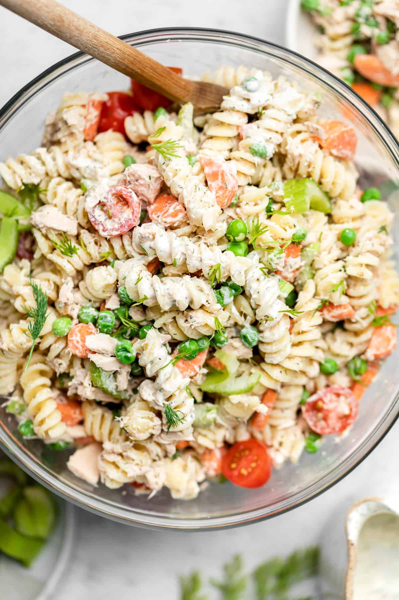

Tuna Pasta

Above is the finished product. A very healthy and Delicious.
You will requrie the following ingredients to make this:
- 250g wholemeal penne
- 240g bio yogurt
- 2tsp English Mustard
- 2tsp Extra Virgin Olive Oil
- 4tsp apple cider vinegar
- 1 red onion, finely chopped
- handful of basil leaves, finely chopped
- 320g tuna in spring water
- 2 red peppers, deseeded and diced
- 340g can sweetcorn, drained
To create the this dish you must take the following steps:
- Boil the pasta for 10 mins until al dente, then drain and rinse under cold
running water. Drain again. Meanwhile, mix the yogurt, mustard, olive oil,
vinegar, onion and basil together in a large bowl, then stir in the tuna,
red peppers and sweetcorn.
- Stir through the pasta and serve in bowls or pack into containers for work or a picnic.
Will keep, covered, in the fridge to eat the next day.